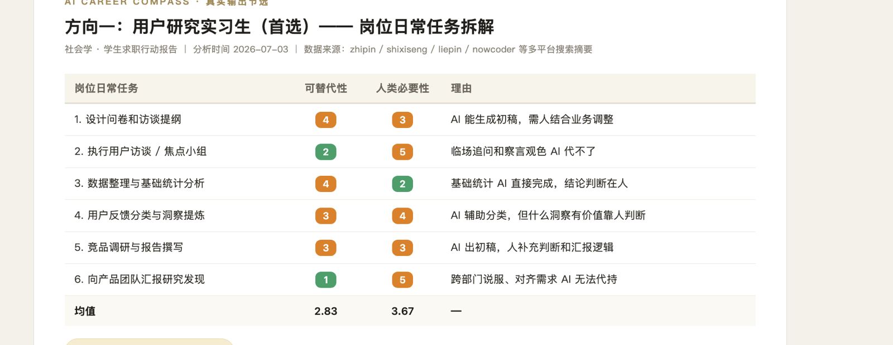
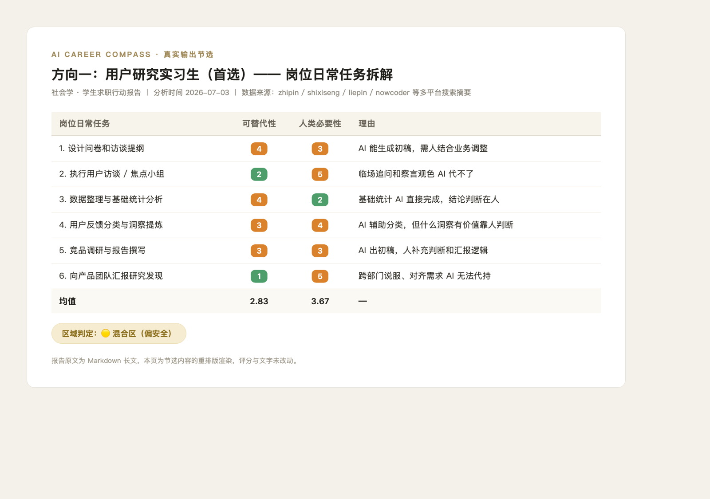
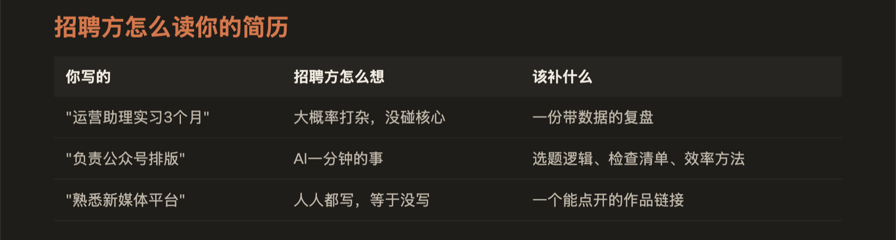
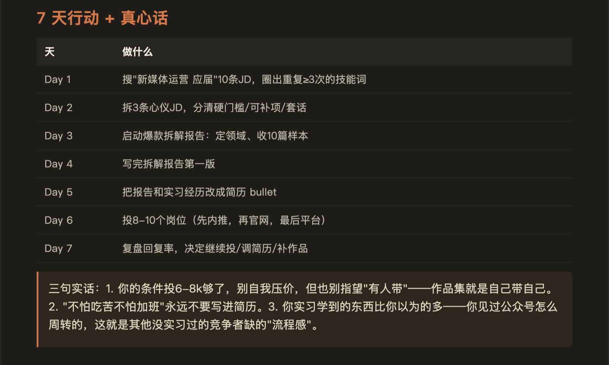

公开案例 / 开源 Skill / 更新于 2026-09-14「我的工作会不会被 AI 吃掉」
「我的工作会不会被 AI 吃掉」
这个问题光吓人没有用，得给出下一步。
如果只用一句话说：在岗的人，盘他上周实际做了什么，做可替代性、人类必要性、资产性三维评分，判断该动、该挪、该加固还是该冷静；求职的人，拆 JD 给可投方向、简历改写和 7 天行动计划。它不贩卖焦虑，只回答「下一步做什么」。

CASE 10OPEN SOURCE
EVIDENCE 01 · 三维评分三维可替代性人类必要性资产性
JD 是写给外人看的。岗位被掏空不是从工作变少开始的，是从你还在忙、但忙的都不是核心的事开始的——所以在职版先看行为，再看岗位。
CALL SHEET / 研发过程
v1 先做求职线，开源发布
公开仓库 loki2046-mao/ai-career-compass 的首个 commit 写着「AI Career Compass v1 — Cola 打底 + Codex & Fiber 5 优化」。v1 两条输入模式：只给岗位名走概念拆解（模式 A），给具体 JD 走逐条对标（模式 B）；学生、应届和转行的人再叠加行动教练线（模式 S），因为转行者和学生面对的是同一个问题——目标岗位上没有现成经历可写。
用两个真实背景跑出完整报告
第二天拿「广告学大三找实习」和「社会学找实习」各跑了一遍全流程，留下两份完整的 Markdown 报告。报告里连数据来源的局限都如实标注：zhipin.com 页面抓取被反爬阻断，任务清单来自多平台招聘摘要、知乎职场讨论和行业文章交叉验证。本页展示的三张截图，都出自这两份真实报告。
进公开主表，长期使用中继续改
Skill 收进公开的 cola-skills 仓库自写主表，本机也一直装着在用。SKILL.md 到 2026-09-11 还有迭代痕迹：评分有 rubric 文件管口径，报告有模板管结构，在岗 playbook 和学生 playbook 分开存放，进入对应模式才读取对应清单。
v2 补上在职盘点：第三维度和四类判决
v1 只回答「危险吗」，v2 的 commit 补上了「该往哪挪、手上有什么能带走的」：新增在职盘点模式 P，评分从两维升到三维（可替代性、人类必要性、资产性），输出改成四类判决——该动、该挪、该加固、该冷静，附该动的信号、老板视角和可迁移资产清单。
REAL ARTIFACTS / 每张图只说明一件事评分怎么打、
评分怎么打、
招聘方怎么读、下一步做什么。
下面三张图全部来自 2026-07-03 两份真实报告的输出：一张是节选的重排版渲染，两张是原始长图截图。报告里的案例背景已做匿名化，评分与文字未改动。



该动该挪该加固该冷静
STATUS BOARD / 项目结果与边界
已经做到
- 公开仓库 v1 到 v2 完整迭代（2026-07-02 建立，2026-09-10 更新），收录于 cola-skills 公开主表
- 两份真实完整报告落地：广告学、社会学两条求职线，含数据来源与样本局限的如实标注
- 三维评分（可替代性、人类必要性、资产性）加四类判决的框架在 SKILL.md、rubric 和模板文件里成型
- 输出可执行：可投方向表、简历逐条改写、7 天行动计划、今天先做的一件事
能用但仍需维护
- 招聘站反爬是常态，数据来源以多平台搜索摘要交叉验证为主，每次报告都要重新核对样本
- 它靠 AI 会话执行而不是独立产品界面，输出质量依赖 rubric 文件和模板的持续维护
- 在职盘点（模式 P）上线时间还短，真实在职报告的积累比求职线薄
没有证明
- 两份报告是真实样本，不是统计结论；没有做过大规模用户验证，也不宣称能预测谁会被裁
- 「AI 暴露度」是按 rubric 给出的主观评分，不是行业统计数据，报告里都按判断呈现
- 不贩卖焦虑是写进核心原则的规矩：只回答哪些事 AI 能干、哪些事非你不可、简历怎么体现